Pedras Naturais — Curadoria de Origem
Mármores
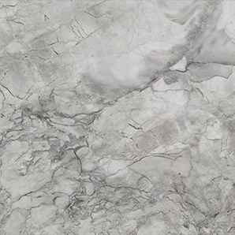
Arabescato
Itália
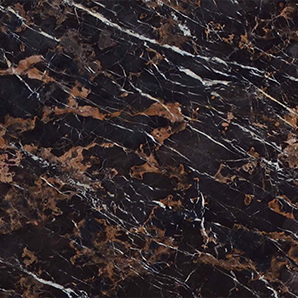
Black & Gold
Paquistão
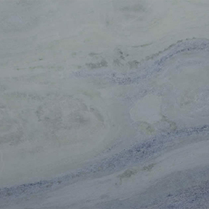
Blue Sky
Brasil
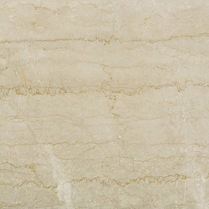
Botticino Clássico Extra
Itália
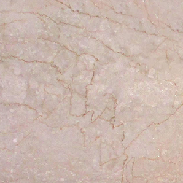
Botticino Clássico
Itália
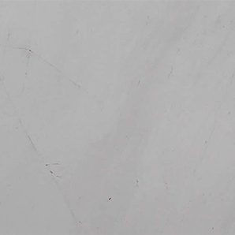
Branco Ariston
Grécia
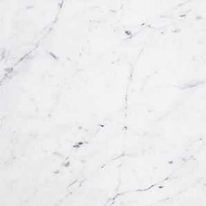
Branco Carrarinha
Brasil
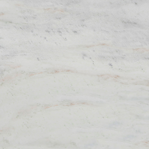
Branco Champagne
Brasil
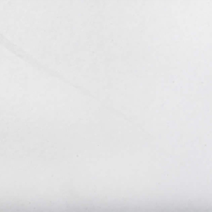
Branco Sivec Extra
Macedônia
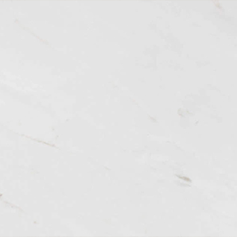
Branco Thassos
Grécia
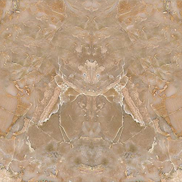
Breccia Oniciata
Itália
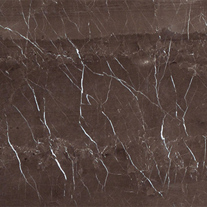
Bronze Armani
Itália
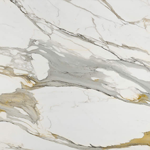
Calacatta Gold Extra
Itália
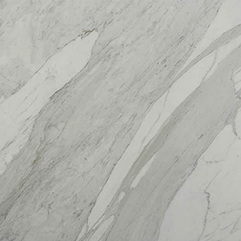
Calacatta Machia Oro
Itália
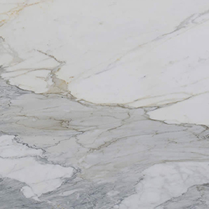
Calacatta Oro
Itália
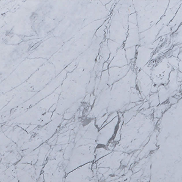
Carrara Gioia
Itália
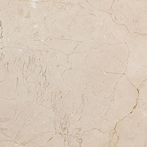
Crema Marfil
Espanha
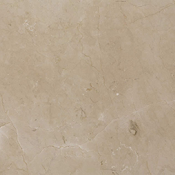
Crema Marfil Standard
Espanha
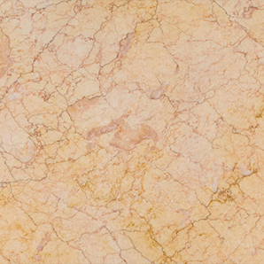
Crema Valencia
Espanha
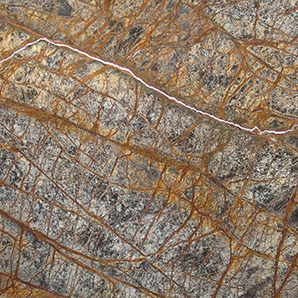
Forest Brown
Índia
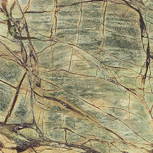
Forest Green
Índia
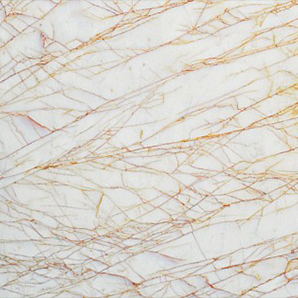
Golden Spider
Grécia
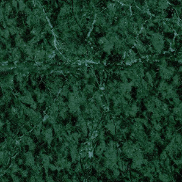
Green Spider
Grécia
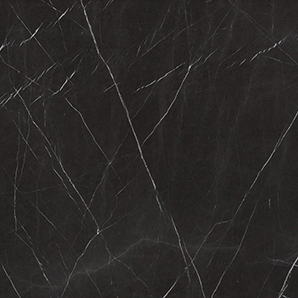
Gris Armani
Itália
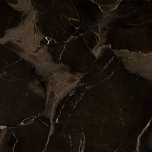
Marrom Imperador Dark
Espanha

Marrom Imperador Light
Espanha

Nero Marquina
Espanha

Nero Portoro
Itália

Perlino Bianco
Itália

Rosso Alicante
Espanha

Rosso Verona
Itália

Statuarieto
Itália

Verde Alpi
Itália

Verde Guatemala
Índia

White Crystal
Brasil